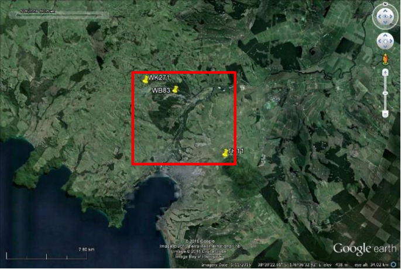
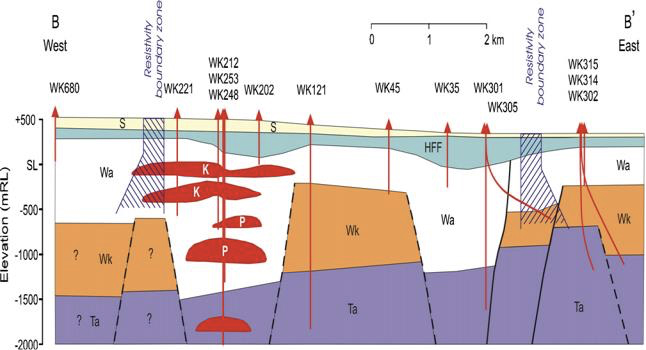
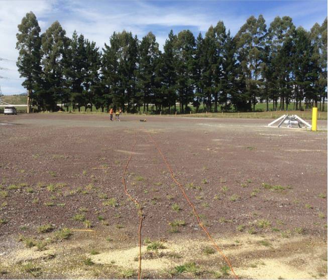
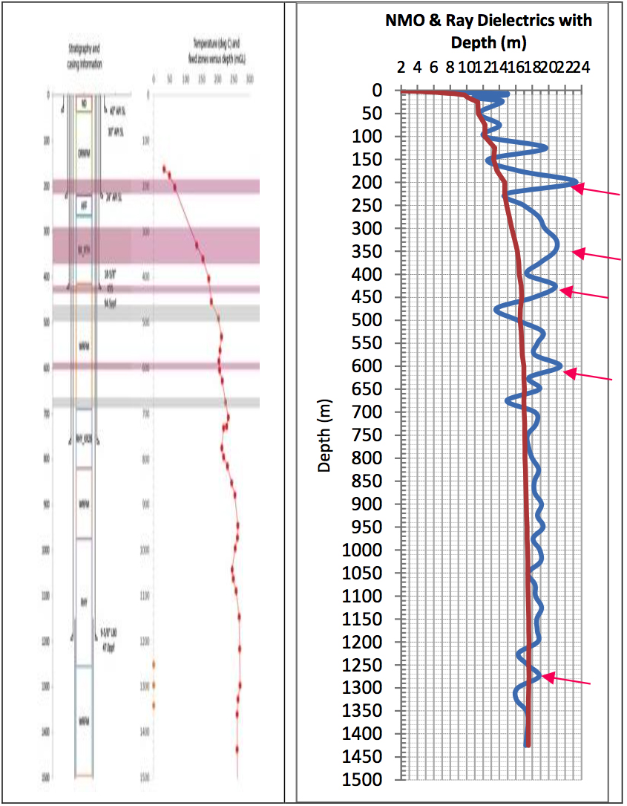
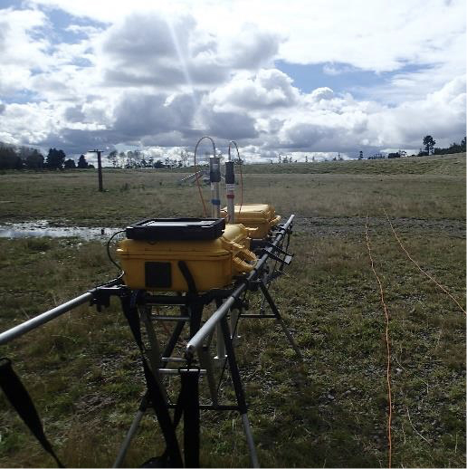
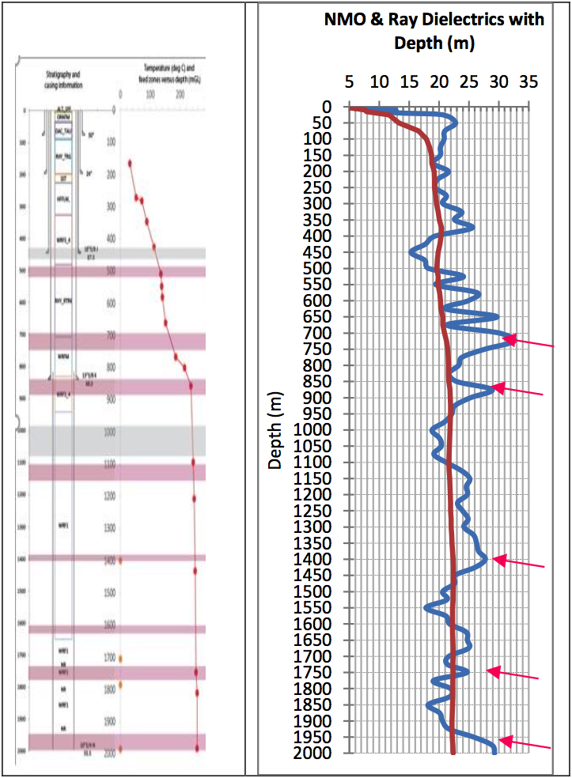
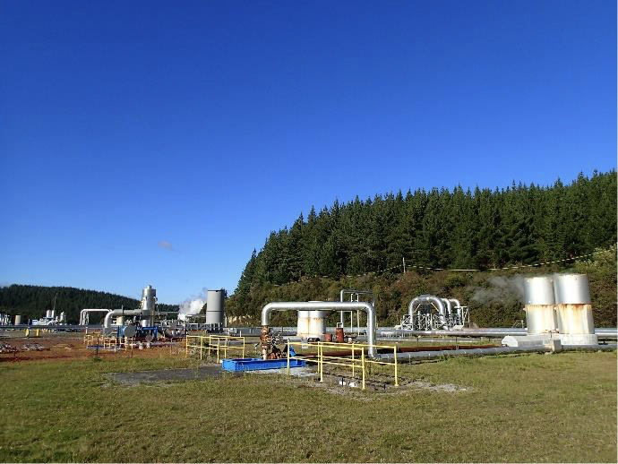
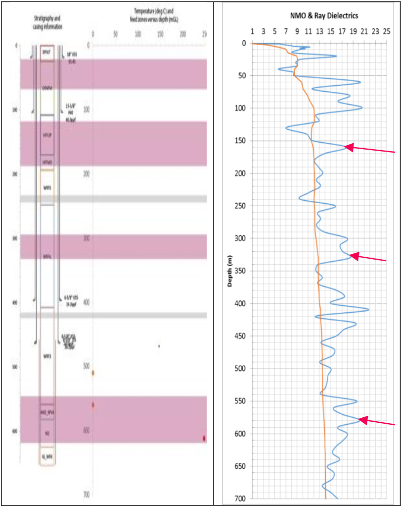

Efficacy test of the application of ADR technology in the Taupo Volcanic Complex, New Zealand
Project aims
The aim of this project was to test the efficacy of the ADR technology in identifying geothermal sources and to identify the basement. The scanning was completed in April 2015.
Exploration/Project challenges
The main challenge in this project was to ascertain if ADR technology could locate steam above the Mesozoic basement1.
Geological context
The Wairakei-Tauhara geothermal system has developed over two million years on the North Island of New Zealand1. The system is bisected by a series of faults1. The Wairakei-Tauhara has been generating geothermal power since 1958 using the underground water with temperatures up to 248°C2. It currently generates at least 300MW1 of electricity p.a. The sedimentary basement is thought to occur 2250m below sea level1 beneath a series of ignimbrites and rhyolite lavas. The main geological controls on temperature are thought to be at 1000m below the surface3.
 Figure 1: Location map of Wairakei site (Google Earth).  Figure 2: Geological overview of the study area. Reds indicate rhyolite. The blue green indicates sedimentary units, the orange are ignimbrites, the white are a mixture of ignimbrites and sedimentary units, the purple unit is dacite(1).Adrok’s results
Adrok applied the interpretation techniques of dielectric constant, harmonic analysis, Stare analysis, P-scan imaging, energy response and weighted mean frequency (WMF) logs to identify the individual targets at the three different sites.
1st site WK271
This site was tracked to 1450m. Dielectrics were plotted against lithology and temperature data provided. The locality of steam was also provided. Dielectric measurements appear to correlate well with temperature, where troughs occur when temperature dropped slightly, while the peaks in dielectric readings appear to occur where steam is known to be present.
 Figure 3: ADR field equipment during the vertical scanning at WK271.  Figure 4: Lithology, temperature and dielectrics at WK271. Red dots indicate temperature measurements. The orange dots indicate the presence of steam. The pink arrows indicate where dielectric peaks match with high temperature measurements.2nd site TH11
TH11 was tracked to 2000m and is located to the south-east of WK271. No training information was available for finding the basement, however it was possible to identify areas of high temperature using dielectrics.
 Figure 5: Photograph of the second site TH11.  Figure 6: Lithology, temperature and dielectrics. Red dots indicate known temperature measurements. The orange dots indicate the presence of steam. The pink arrows indicate where dielectric peaks match with high temperature measurements.3rd site WB83
WB83 was tracked to 700m. No temperature profile was available for WB83, although areas where low WMF and high dielectrics have been used to identify potential areas of steam or high temperature.
 Figure 6: Photograph of the third site.  Figure 7: Dielectrics and lithology with known temperature (red) steam locations (orange) for W83. No temperature data was provided by client.At all three sites showed peaks in dielectric readings that correspond to the presence of steam. Lows in dielectric readings may indicate lithology boundaries.
Benefits for client
Adrok showed that steam can be identified and mapped in detail using dielectric measurements. Consequently, ADR technology can be used as an alternative to the conventional geophysical methods to identify steam and possibly temperature quicker, cheaper, greener and in a non-destructive way.